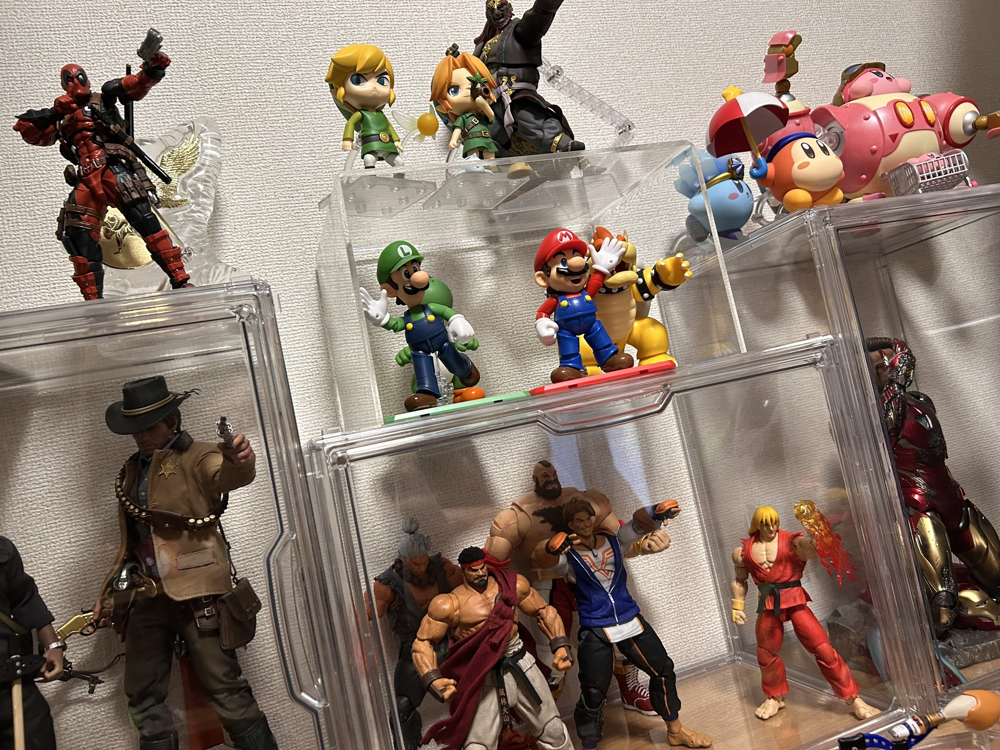
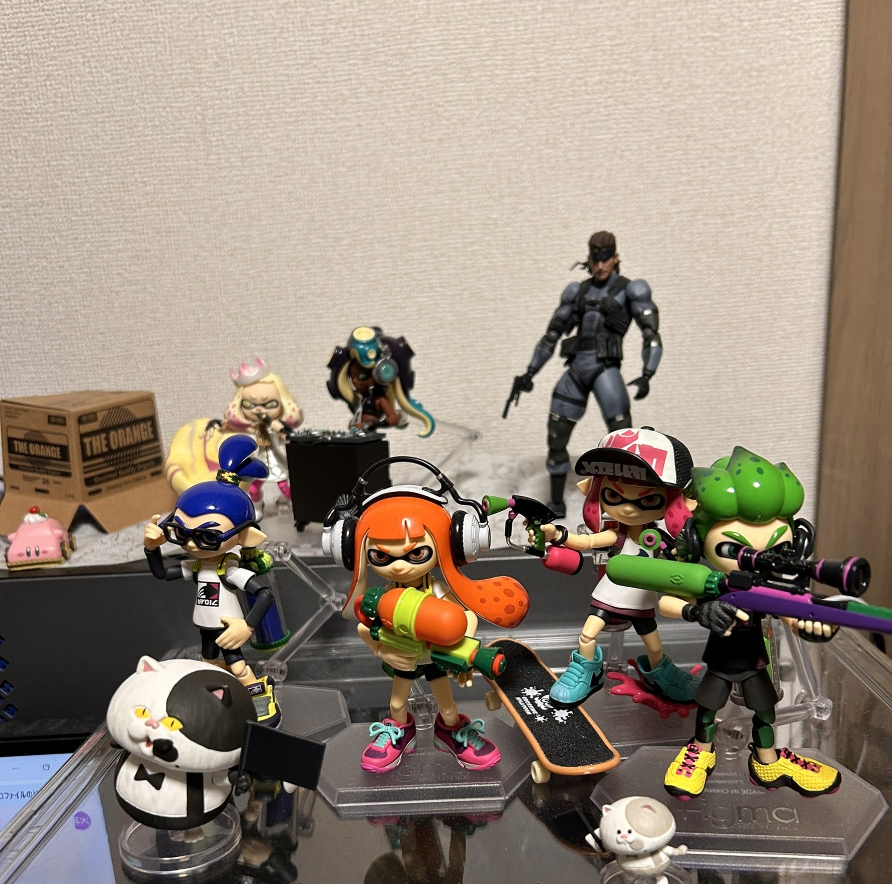
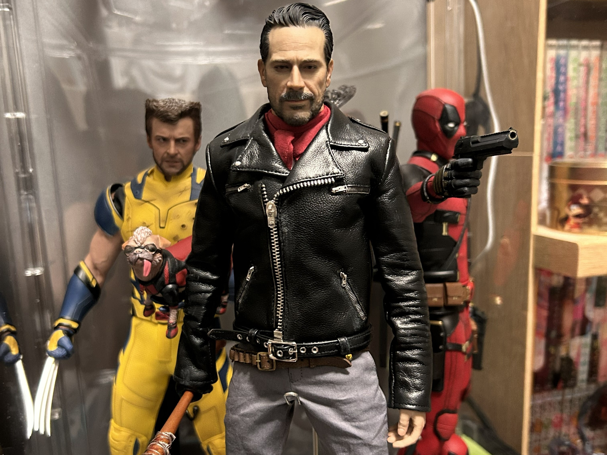
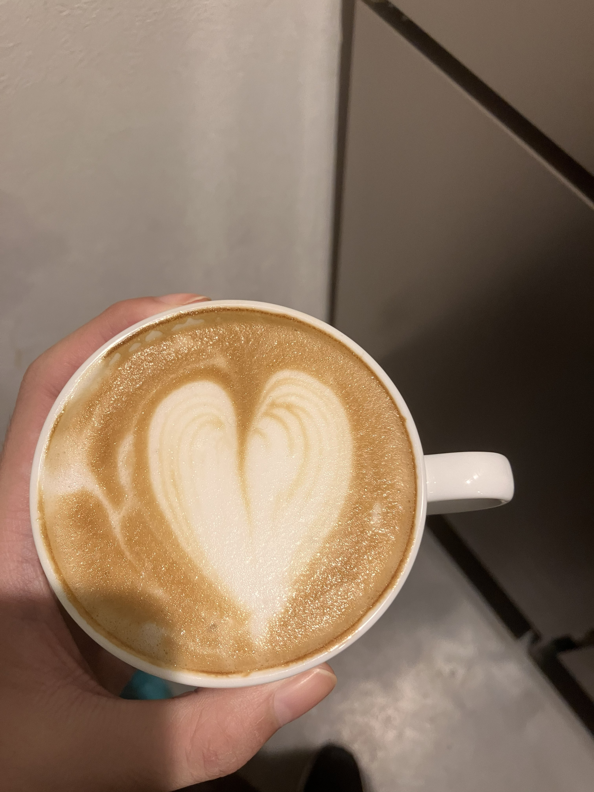

1,可動フィギュア集め



可動フィギュアを集めることが好きです。キャラクターを、立体的に観察し、
自らの手で命を吹き込める点に魅力を感じています。
2, ラテアート

2年間、カフェのアルバイトでラテアートを練習していました。
特にハートが得意で、うまくかけた時に、達成感を感じています。
3, ドラムの練習
練習パッドで練習していて、動画や耳コピからドラム練習をしていて、
主にゲームのBGMを叩くのが好きです。
4, ガンスピン
おもちゃのリボルバーでガンスピンを楽しんでいます。
動画を参考にして練習していて技ができた時の達成感や心地よさなどが好きです。